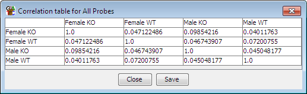

The correlation matrix is a quick way to produce a table containing all of the pairwise correlation values for all of the currently visible quantitated data stores.

You can create a correlation matrix by selecting "Plots > Correlation Matrix"
The correlation matrix calculates a Pearson correlation for all pairs of data stores, using the currently selected probe list. You can save the output of the matrix to a tab delimited text file.